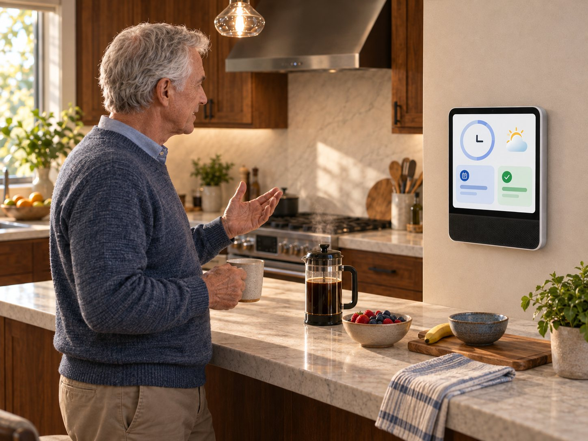

Story One · Ron and Maya at Home
Livonne Care
Livonne Care
Download chapterRon and Maya at Home
Download full storyAt three that afternoon, Maya walks into Ron’s house and begins the same way she always does.
“How was your day?”
“Fine.”
She opens the refrigerator while asking what he had for lunch. She glances at the pill organizer on the counter and confirms that he still remembers their plans for next Wednesday.
By the time she sits down, the visit has already become an inventory.
Ron notices.
“You don’t have to check up on me every time you come over.”
“I know.”
But they both know that she does.
Maya pulls her chair closer.
“Dad, I ordered something I think could help us. It’s called Livonne Care.”
“What does it do?”
“It helps coordinate your day. It can handle reminders, answer questions, and help you keep track of things when I’m busy.”
“So, a computer.”
“More like an assistant that lives here with you.”
“I don’t need a babysitter.”
“I know. You’re still in charge. This just means you don’t have to wait for me every time you need help.”
Ron studies her.
“And you already bought it.”
“I did.”
“Well, then I suppose we should open the box.”
They set up the main screen in the kitchen, where Ron naturally begins his day. Livonne walks them through the first decisions together. What should appear on the home screen? What information does Ron want to see in the morning? How should the assistant present itself?
It can simply be a voice, with clear cues on the screen showing where the voice is coming from. It can appear as an animated companion. Or it can use a familiar webcam-style presence, closer to a human assistant appearing on a call.
Maya takes a telephone handset from another box.
“I ordered this too. I thought you might prefer it.”
“So I can just use the phone?”
“You pick it up and talk to your assistant. We can send it back if you’d rather use the screen.”
“No. Keep that.”
Once they settle on the interface, Livonne asks Ron about his mornings, his appointments, the people he trusts, and the things he most often wants help remembering. Maya fills in a few details when he asks her to.
That gives Livonne a place to begin. From there, it can learn what actually helps him.
With the main system running, Maya opens the smaller boxes.
The first is a bedside clock.
“This gives you the same assistant in your bedroom. It can handle your alarms and help you get oriented when you first wake up.”
Ron nods.
“That makes sense.”
The next device is for the bathroom.
He looks at it, then at Maya.
“Why do I need one in there?”
“If you slipped, it could notice the sudden change in your posture and ask whether you’re okay.”
“And if I dropped the soap?”
“Then you tell it you dropped the soap, Dad.”
“Fair enough.”
Ron recognizes the final device as soon as Maya takes it out.
“That looks like your Alexa.”
“It’s similar, but this one has a camera. You can video-call the kids, and we can send photographs straight to the screen. It also connects to your doorbell camera, so you can see who’s outside before you get up.”
“That’s useful.”
“It has the same fall detection too. But because this one has a camera, it can check whether you actually fell or you’re just looking for the remote under your chair.”
Ron smiles.
“I like that one.”
Maya connects it to the doorbell camera he already owns, then steps back.
Ron looks around at the screen in the kitchen, the clock, the bathroom sensor, and the new device beside his chair.
“Speaking of Alexa, I already feel like that thing is listening to me. Every time I mention something, it shows up on my Facebook feed the next day. Now we’ve added all of this.”
“This is different from Alexa, Dad. Alexa belongs to Amazon, and Amazon wants to sell you things. Livonne works differently.”
“How?”